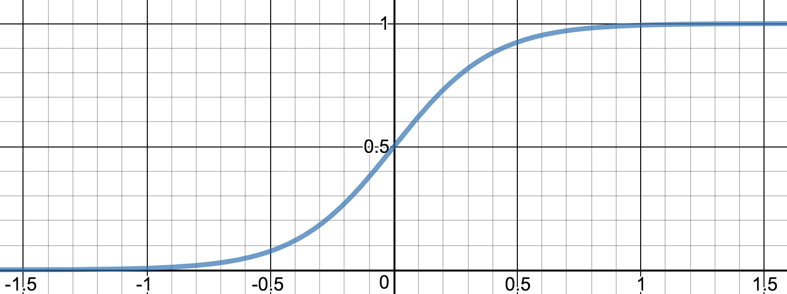
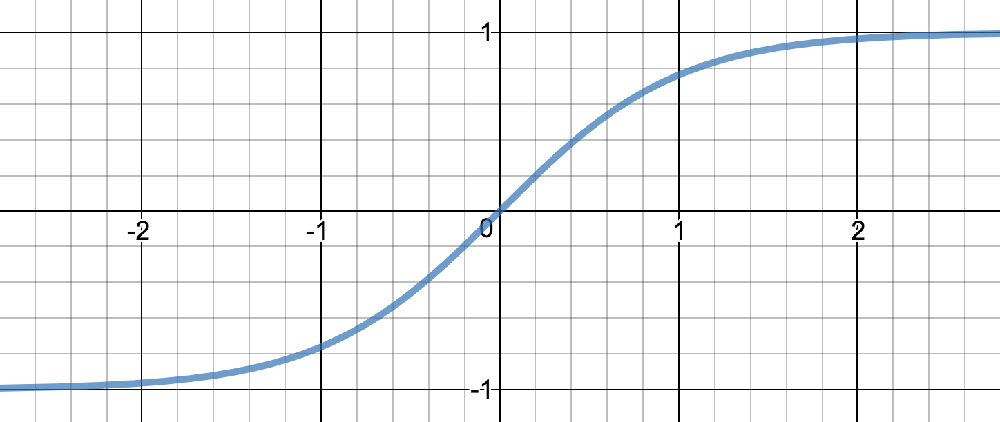
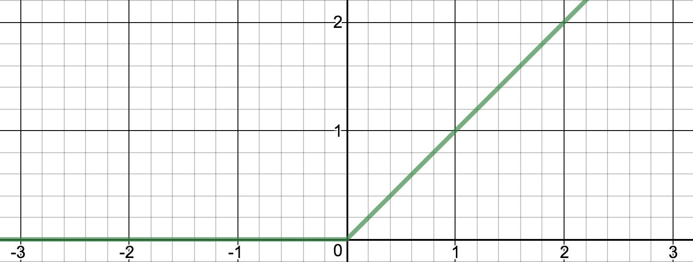
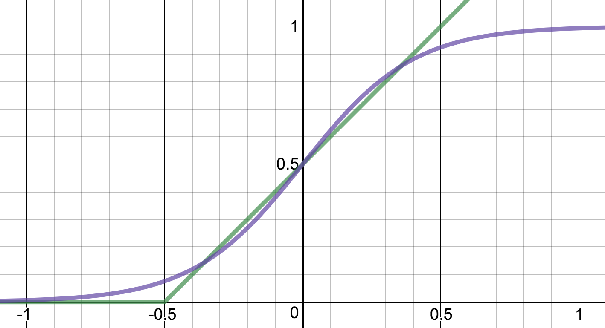
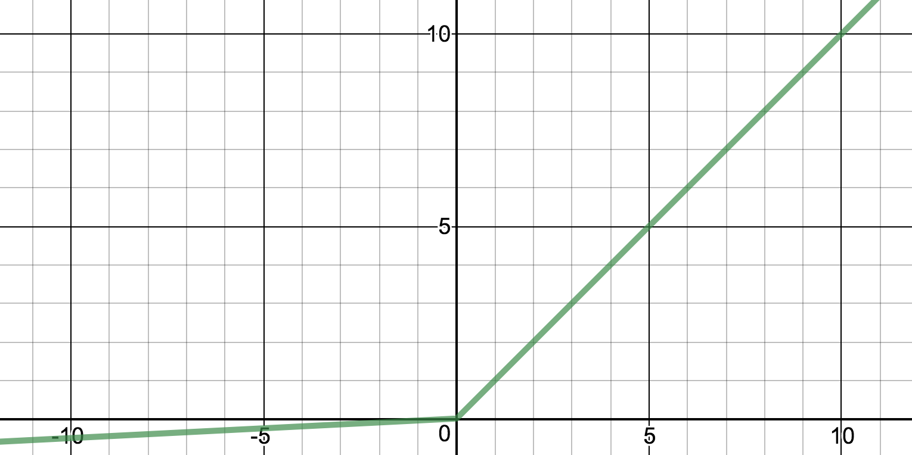

TL;DR 本文将介绍神经网络中常用的几种激活函数的特性和使用场合。
神经网络(Neural Network)中的激活函数(Activation Function)选择是至关重要的，它直接影响着模型的performance。
各种激活函数介绍
下面将对比较常见的几种激活函数做简单的介绍：
Sigmoid
Sigmoid是最早被使用的激活函数之一，现在依旧经常出现在教科书和教学中，是最经典的激活函数之一。Sigmoid函数有时使用符号$\sigma$来表示。
数学表示
$$ a=\frac{1}{1+e^{-z}} $$
图像

Note: 为了图像更加紧凑，这幅图实际对应的函数是$a=\frac{1}{1+e^{-5z}}$
导数
$$ f’(z)=\frac{\mathrm d \sigma}{\mathrm d z}=\frac{1}{1+e^{-z}}(1-\frac{1}{1+e^{-z}})=f(z)(1-f(z))=\sigma(1-\sigma) $$
特性
可以看到sigmoid函数的一个最大的特点就是：值域严格限制在(0, 1)开区间。这种特性使得sigmoid可以将实数范围的值表示成概率的形式，这是sigmoid最大的特点。
tanh
tanh函数的全称是”hyperbolic tangent”,属于”Hyperbolic function”(双曲线函数)，关于这个函数的更多详细的资料可以访问Hyperbolic function在Wikipedia的相关页面
数学表示
$$ a=\frac{e^{z}-e^{-z}}{e^{z}+e^{-z}} $$
图像

导数
$$ f’(z)=\frac{\mathrm d \tanh}{\mathrm d z}=1-(\frac{e^{z}-e^{-z}}{e^{z}+e^{-z}})^2=1-f(z)^2=1-\tanh^2 $$
特性
tanh函数和sigmoid函数非常相似，都是一个优雅的S型曲线，事实上$tanh=sigmoid(z)*2+1$。唯一不同的地方是tanh的值域严格限制在(-1, 1)开区间。
ReLU
ReLU的全称是”Rectified Linear Unit”（中文名应该翻译成“线性整流函数”或“修正线性单元”，但中文名几乎无人使用）。是目前神经网络中最主流的激活函数。
数学表示
$$ a=max(0, z) $$
图像

导数
$$
f’(z) =
\begin{cases}
0 & \quad \text{if } z < 0\\
1 & \quad \text{if } z > 0
\end{cases}
$$
特性
ReLU可以被看作是sigmoid函数在$(-\infty, 0)$定义域上的近似函数。如下图：

上图中，蓝色的线表示sigmoid函数，绿色的线表示ReLU函数。
Note：为了让图更加容易理解，实际使用的sigmoid函数是$a=\frac{1}{1+e^{-5z}}$，ReLU函数是$a=max(0, z+0.5)$
同时因为因为数学上特别简单，所以计算速度非常快。已经在很多领域替代sigmoid和tanh。
Leaky ReLU
是对ReLU的微小改动，在某些情况下会有比较好的效果。
数学表示
$$ a=max(\alpha z, z) $$
其中$\alpha < 1$
图像

Note: 上图中使用的函数为：$ a=max(0.05z, z) $
导数
$$
f’(z) =
\begin{cases}
\alpha & \quad \text{if } z < 0\\
1 & \quad \text{if } z > 0
\end{cases}
$$
特性
Leaky ReLU是ReLU的改动版，在某些特定的情况下会有比较好的结果。
列表对比
下面用列表的形式，对常见的几种激活函数的特性和使用场景做一个总结：
| 函数名 | 函数公式 | 使用场景^[来自：Neural Networks and Deep Learning by Andrew Ng on Coursera] |
|---|---|---|
| sigmoid | $a=\frac{1}{1+e^{-z}}$ | 适合二分类问题的output layer |
| tanh | $a=\frac{e^{z}-e^{-z}}{e^{z}+e^{-z}}$ | 绝大多数情况下优于sigmoid |
| ReLU | $a=max(0, z)$ | 优先使用这种方法（推荐） |
| Leaky ReLU | $a=max(\alpha z, z)$ | 某些情况下效果较好 |
Note: 在实际场景中，可以尝试不同的函数，寻找最优方案。